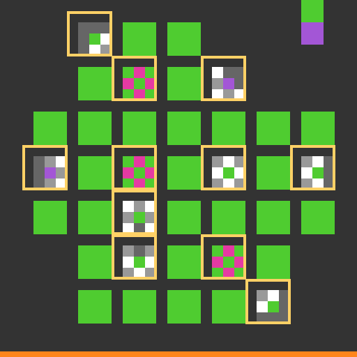
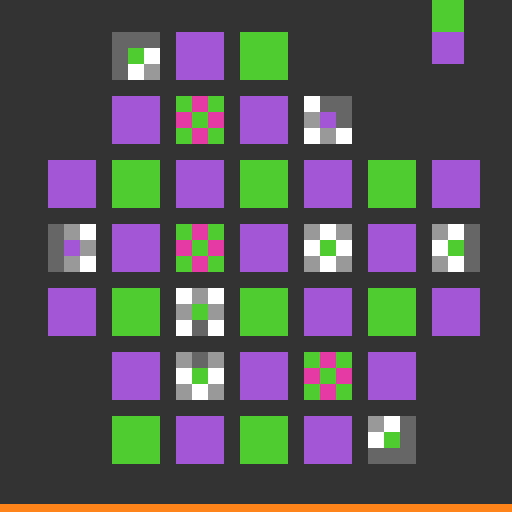
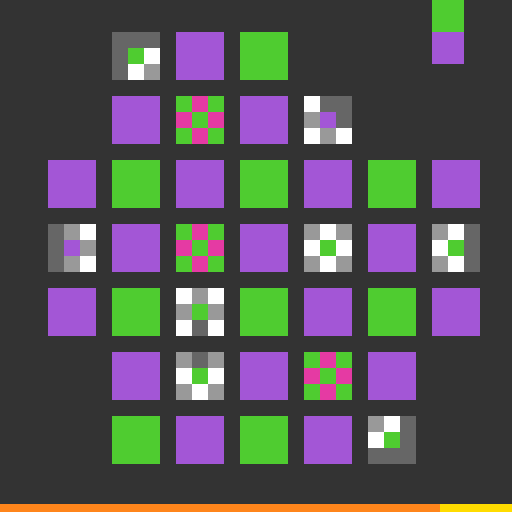

1. Guess
The clues seemed to say which green squares should become purple.
Previous: successful level-4 audit
This is a genuinely prospective test. The learner saw the untouched board, formed one actionable target, and made 18 guarded clicks without using a level-5 solution trace.
The clues seemed to say which green squares should become purple.
Each click changed exactly the square and color predicted.
The finished picture was not accepted. So the clicker was right, but the clue rule was incomplete.



Click a button to inspect the recorded effect. Colors 14 and 15 are the pixel labels for the two editable states.
Reject the simple global same-or-flip interpretation. Overlap agreement was enough on level 4, but not on level 5. The four mark types likely carry richer operator meaning, or the clues impose a higher-order rule that the binary model omitted.
Next, learn the mark operators from solved levels 1-4 and hold out one solved level as a calibration test. Return to level 5 only if that learned model predicts a unique target different from this rejected one.
structural_pass=true ·
prospective_gate_pass=false